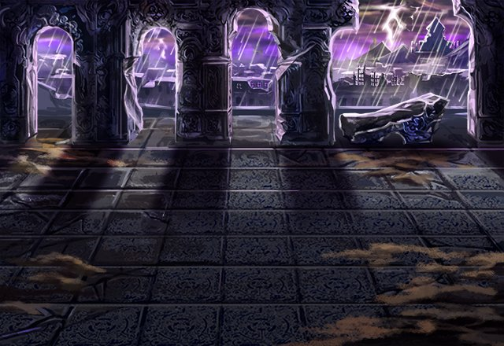

ルジーナ
俺程度の相手には、 本気を出すまでもないってことか！？
カル
俺は手なんか抜いていない！ 本気を出している！
ルジーナ
テメーが、この程度の実力なわけねーだろ！
セリア
グラデンス様からアンタたちの居場所を 聞き出すの苦労したんだから！
ルジーナ
やはり甘ちゃんのテメーは、 俺様の足元にも及ばねーってことがな。
ルジーナ
…チッ、 やっぱりテメーは気に食わね野郎だ！！
ルジーナ
あんなチンケな魔神討伐の功績なんざ、 テメーらにくれてやる！
ルジーナ
テメーもそんなヤツと関わり続けてると ろくなことにならねーぞ！
ルジーナ
俺とカルのどっちが強いかは お前もわかっただろ？
ルジーナ
最強の召喚師は、 このルジーナ様ってことがよ。
リム
お疲れ様でした！！ 無事のご帰還、お待ちしております。
リム
でも、ルジーナさんがいなくて、 代わりにセリアさんがいるみたいですが、
セリア
私もついさっきここに来たばかりで、 状況はわかってないわ。
セリア
カルたちとの間に 何があったかは知らないけど、
セリア
さっきのアイツ、 ちょっとひどいんじゃないの！？
セリア
どうせ、今みたいなこと、 ルジーナに言ったんでしょう？
セリア
あなたがアイツを褒めたらどうなるかくらい 想像してよ。
セリア
どうやらルジくんも スッキリしたみたいだし、
セリア
イシュグリアでの戦いでも、 少しは役に立ちそうじゃない。
カル
俺たちは、それぞれもっと強く ならなくちゃいけない。
カル
それは、アイツだけじゃなく、 俺たちも、だもんな。
カル
セリア、Shou-chan、 がんばろーぜ。
カル
ルジーナが悪態をつくくらいの 相手でいられるようにな。
セリア
私はそんな理由で 強くなるんじゃないわよ！
リント
だが、ルジーナは 大して痛い目に遭っておらず、
リント
あの性格を悪化させ、 さらに増長させることになった……。
リント
キミの不満は、 そんなところなんじゃないかい？
ノエル
わかっているなら、 そんな回りくどい言い方はやめてくれ。
リント
ルジーナ召喚師を更生させるのは、 また別の機会を待てばいい。
リント
今は素直に、 彼の成長を喜ぼうじゃないか。
ノエル
今回は、 これでよしとしておくことにするよ。
ノエル
では、それじゃあ さっそく次の計画について……。
グラデンス
久しぶりじゃのう。 ノエル、リントよ。
グラデンス
老い先短い年寄りを、 そう邪険にするもんじゃないぞ。
グラデンス
いやなに、 ちょっと話をしに来ただけじゃよ。
グラデンス
お主らが討伐依頼を 操作してる件のことなんじゃがのう。
グラデンス
ただ、これ以上やると、 ワシ以外にもバレる可能性がある。
リント
カル召喚師が、なぜあの場所にいたのか ずっと不思議に思っていたけど、
リント
ひどいなあ。 ボクたちの計画を利用するなんて……。
ノエル
確かに依頼操作は、 今後ちょっと控えたほうがいいかもね。
グラデンス
イシュグリアへ向かう準備が 整いつつあるのは事実じゃ。
ノエル
なにしろ、ボクらには他にも研究しなければ ならないことが、山のようにあるからね！
ノエル
ヤツらにエルガイアの人間が どれだけ強くなったのか見せてあげるよ。
ノエル
ボクはアイツらを 絶対に超えてみせる……。